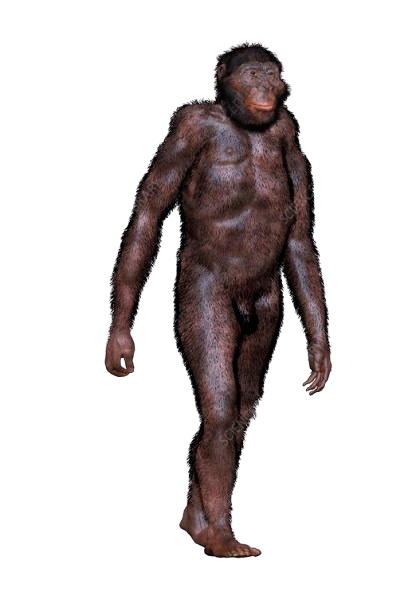
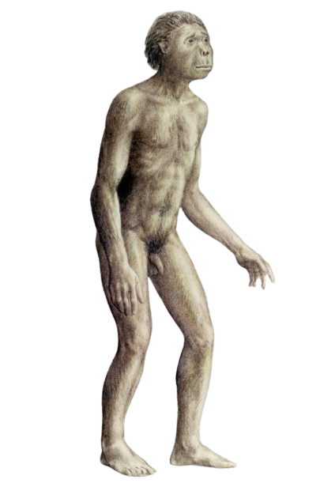
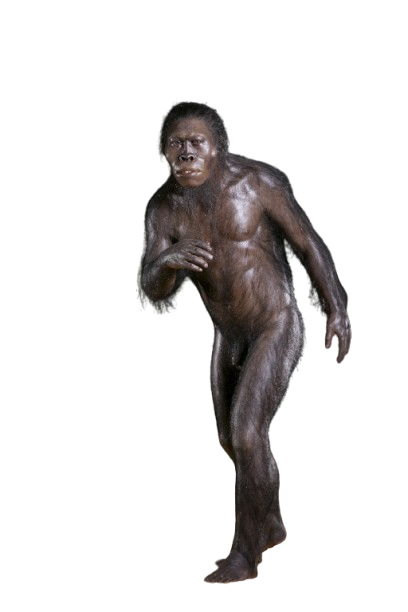
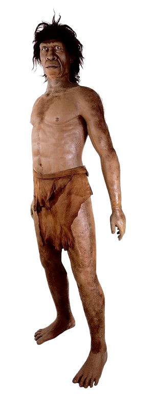
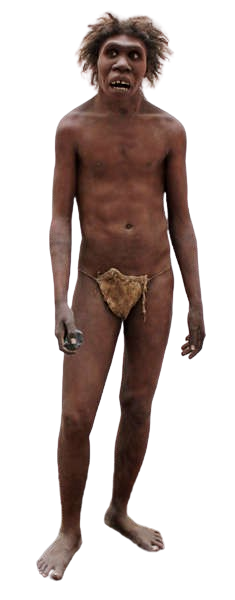
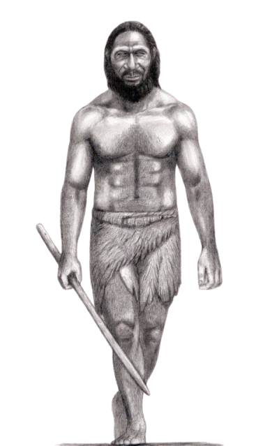
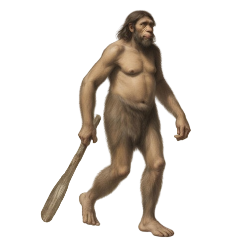
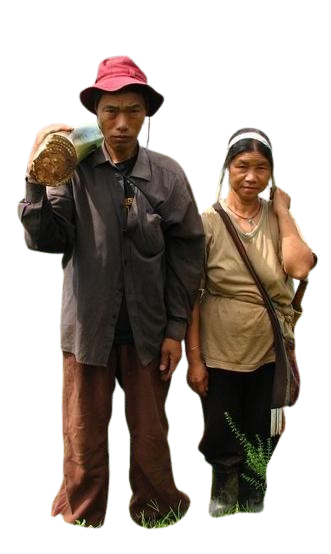

📅Period života: Živjeli su prije 3,9 do 2,9 miliona godina.
📍Lokacija: Naseljavali su područje istočne Afrike, današnja Etiopija, Kenija i Tanzanija.
🦴Gdje su nađeni fosili? Najpoznatiji fosil "Lucy" pronađen je u Etiopiji 1974. godine. Također, drugi ostaci su nađeni na različitim mjestima u Africi.
❓Zanimljivosti:
• Hodali su uspravno, ali su zadržali sposobnost penjanja na drveće.
• Imali su male mozgove (oko 400 cm³), što je bliže majmunima nego modernim ljudima.
• Bili su biljojedi, ali su povremeno jeli i manje životinje.
• Žene su bile znatno manje od muškaraca, što ukazuje na izražen polni dimorfizam.

📅Period života: Živjeli su prije 3,3 do 2,1 miliona godina.
📍Lokacija: Naseljavali su južnu Afriku, današnja Južnoafrička Republika.
🦴Gdje su nađeni fosili? Najpoznatiji fosili:
"Dijete iz Taunga" – prvi fosil otkriven 1924. godine u Južnoafričkoj Republici.
"Gospodin Ples" – gotovo potpuna lobanja pronađena u Sterkfonteinu.
❓Zanimljivosti:
• Prvi otkriveni rani hominin, što je dokazalo da su naši preci dolazili iz Afrike.
• Hodali su uspravno, ali su zadržali prilagodbe za penjanje.
• Mozak im je bio veći (oko 450-500 cm³) u poređenju s Australopithecus afarensis.
• Koristili su jednostavne alate, ali nema jasnih dokaza o njihovoj proizvodnji.
• Imali su jače zube, što sugerira da su jeli tvrđu biljnu hranu.

📅Period života: Živjeli su prije 2,4 do 1,4 miliona godina.
📍Lokacija: Naseljavali su istočnu i južnu Afriku, današnje Keniju, Tanzaniju, Etiopiju i Južnoafričku Republiku.
🦴Gdje su nađeni fosili? Najvažniji fosili:
"OH 7" – prvi fosil otkriven u Olduvai klancu (Tanzanija) 1960. godine.
"KNM-ER 1813" – skoro potpuna lobanja pronađena u Keniji.
❓Zanimljivosti:
• Naziv znači "spretni čovjek", jer su koristili jednostavne kamene alate.
• Prvi pripadnik roda Homo, iako su još uvijek imali neke primitivne osobine.
• Mozak im je bio veći (oko 510-600 cm³) u odnosu na Australopithecus vrste.
• Hodali su uspravno, ali su zadržali sposobnost penjanja na drveće.
• Bili su svejedi – jeli su biljke, meso i insekte.
• Alati koje su koristili pripadaju Olduvanskoj kulturi – jednostavni, ali korisni za rezanje i obradu hrane.

📅Period života: Živjeli su prije oko 2,4 do 1,9 miliona godina.
📍Lokacija: Naseljavali su istočnu Afriku, današnju Keniju, Tanzaniju i Malavi.
🦴Gdje su nađeni fosili? Najpoznatiji fosil:
"KNM-ER 1470"– lobanja otkrivena 1972. godine u Keniji kod jezera Turkana.
❓Zanimljivosti:
• Postoji debata da li su zaista posebna vrsta ili samo veća varijanta Homo habilisa.
• Imali su veći mozak (oko 700 cm³), što je više od Homo habilisa.
• Lice im je bilo šire i ravnije, a zubi veći nego kod drugih ranih Homo vrsta.
• Koristili su alate, ali nije sigurno da li su ih sami pravili ili su koristili one koje je izradio Homo habilis.
• Prelazna vrsta između Australopithecusa i kasnijih Homo vrsta.

📅Period života: Živjeli su prije oko 1,9 do 1,4 miliona godina.
📍Lokacija: Naseljavali su Afriku, posebno područja današnje Kenije, Tanzanije, Etiopije i Južnoafričke Republike.
🦴Gdje su nađeni fosili? Najpoznatiji fosili:
"Turkanski dječak" (KNM-WT 15000) – gotovo potpuni skelet pronađen kod jezera Turkana u Keniji.
Ostaci otkriveni i u Tanzaniji (Olduvai klanac) i Južnoafričkoj Republici.
❓Zanimljivosti:
• Prva vrsta koja je imala građenu tijela sličnu modernom čovjeku, s dužim nogama i kraćim rukama.
• Mozak im je bio veći (oko 600-900 cm³) u poređenju s ranijim vrstama.
• Prvi ljudi koji su potpuno napustili život na drveću i prilagodili se životu na tlu.
• Koristili su naprednije kamene alate, pripadaju Ašelskoj kulturi (dvostrano obrađene sekire).
• Moguće da su prvi koristili vatru, iako nema jasnih dokaza.
• Smatra se direktnim pretkom Homo erectusa, ali su neki naučnici mišljenja da su zapravo ista vrsta.

📅Period života: Živjeli su prije oko 1,9 miliona do 110.000 godina.
📍Lokacija: Prvi ljudi koji su napustili Afriku i naselili:
Afriku (Kenija, Tanzanija, Južnoafrička Republika)
Aziju (Indonezija, Kina, Gruzija)
Evropu (Djelomično, fosili u Dmanisiju, Gruzija)
🦴Gdje su nađeni fosili? Najpoznatiji fosili:
"Turkanski dječak" – gotovo potpuni skelet pronađen u Keniji.
"Pekinški čovjek" – pronađen u Kini.
"Javanski čovjek" – otkriven u Indoneziji.
Ostaci su nađeni i u Dmanisiju (Gruzija), što pokazuje da su stigli do Evrope.
❓Zanimljivosti:
• Prvi ljudi koji su u potpunosti hodali uspravno, s proporcijama sličnim
modernim ljudima.
• Mozak im je bio dosta veći (prosječno 900-1.100 cm³).
• Prvi koji su koristili vatru, što im je pomoglo u kuhanju hrane i zaštiti od
predatora.
• Izrađivali su sofisticiranije alate (Ašelska kultura – kamene sekire, noževi).
• Bili su lovci, koristili su strategije i možda sarađivali u grupama.
• Jedna od najdugovječnijih ljudskih vrsta – živjeli su skoro 2 miliona godina!
• Pretpostavlja se da su preci Homo sapiensa, ali su možda imali i druge podvrste
poput Homo heidelbergensis.

📅Period života: Živjeli su prije oko 700.000 do 200.000 godina.
📍Lokacija: Naseljavali su Afriku, Evropu i zapadnu Aziju. Fosili su pronađeni u:
Africi (Etiopija, Zambija, Tanzanija)
Evropi (Njemačka, Španija, Francuska, Grčka)
Aziji (Kina)
🦴Gdje su nađeni fosili? Najpoznatiji fosili:
"Heidelberški čovjek" – prvi fosil pronađen 1907. u Njemačkoj (donja vilica).
"Kabwe lobanja" (poznata i kao "Broken Hill lobanja") – pronađena u Zambiji.
Ostaci pronađeni u Sima de los Huesos, Španija, zajedno s 30 skeleta!
❓Zanimljivosti:
• Smatra se zajedničkim pretkom neandertalaca i modernih ljudi.
• Mozak im je bio sličan Homo sapiensu (oko 1.100-1.400 cm³).
• Prvi ljudi koji su lovili velike životinje poput jelena, konja i nosoroga.
• Koristili su drvene koplja, što je dokazano u Njemačkoj (koplja iz Schöningena,
stara 400.000 godina).
• Vjerovatno su gradili skloništa i koristili vatru za grijanje i kuhanje.
• Moguće da su prvi pokazivali rane oblike simbolike i komunikacije, što ih čini
važnim korakom prema modernim ljudima.

📅Period života: Živjeli su prije oko 400.000 do 40.000 godina.
📍Lokacija: Naseljavali su Evropu i zapadnu Aziju, uključujući:
Evropa (Francuska, Španija, Njemačka, Italija, Rusija)
Bliski istok (Palestina, Irak, Iran, Armenija)
🦴Gdje su nađeni fosili? Najpoznatiji fosili:
"Neandertalska lobanja" pronađena u Neander Valley u Njemačkoj 1856. godine,
odakle je dobio ime.
"La Chapelle-aux-Saints" – gotovo potpuni skelet pronađen u Francuskoj 1908. godine.
Fosili iz Španije, Rusije, Italije i Izraela također su značajni.
❓Zanimljivosti:
• Prvi ljudi koji su pokazivali znakove socijalne organizacije – vjerovatno su brinuli
za bolesne i stare članove zajednice.
• Mozak im je bio veći od modernih ljudi (oko 1.200-1.750 cm³), ali su im moždane
regije bile raspoređene drugačije.
• Izrađivali su sofisticirane alate, poznate kao Mousterianski alati, uključujući
oštre kamenčiće, bodeže i koplja.
• Koristili su vatru i nosili odjeću od životinjske kože.
• Lovili su velike životinje, kao što su mamuti, bizoni, konji i srne.
• Pokazivali su prve oblike rituala, uključujući sahranjivanje svojih mrtvih, ponekad
uz poklone kao što su životinjske kosti i alate.
• Uspostavili su međuljudske odnose sa Homo sapiensima – genetika pokazuje da
su se križali, pa današnji ljudi nose do 2% DNK od neandertalaca.

📅Period života: Živimo danas, a naši najraniji preci pojavili su se prije oko 300.000 godina u Africi.
📍Lokacija: Poreklo imamo iz Afrike, ali se tokom vremena proširili po celom svetu. Prvi migranti su
napustili Afriku pre oko 100.000 godina. Danas nas ima u svim delovima sveta.
🦴Gdje su nađeni fosili? Najpoznatiji fosili:
"Herto fosili" – pronađeni u Etiopiji, stari oko 160.000 godina.
"Omo lobanje" – pronađene u Etiopiji, stare oko 195.000 godina, smatraju se najstarijim
fosilima Homo sapiensa.
Fosili su pronađeni i na drugim mestima širom Afrike, kao i u Evropi, Aziji i Australiji.
❓Zanimljivosti:
• Prvi ljudi sa razvijenim jezikom, simboličkim razmišljanjem, umetnošću i
kompleksnim društvenim strukturama.
• Mozak im je vrlo razvijen, s prosečnim obimom od 1.300-1.500 cm³, što
omogućava naprednu kogniciju, kreativnost i apstraktno razmišljanje.
• Kultura i umetnost: Prvi umetnički izrazi pojavljuju se pre oko 40.000 godina u
obliku pećinskih slika, skulptura i ukrasa.
• Tehnološki napredak: Pravili su sofisticirane alate, koristili vatru, razvijali
poljoprivredu, gradili naselja i razvijali trgovinu.
• Globalna migracija: Homo sapiens je jedina preostala vrsta iz roda Homo, iako
su tokom istorije postojali i drugi hominini poput neandertalaca i Denisovaca.
• Izražena empatija i socijalne veze: Homo sapiens su razvili kompleksne socijalne
i emocionalne veze, što im je omogućilo napredak u grupnom životu i opstanak.
• Genetska raznolikost: Danas se Homo sapiens deli u mnoge etničke grupe, a sve
ove grupe imaju zajedničke korene u Africi.


.png)
.png)